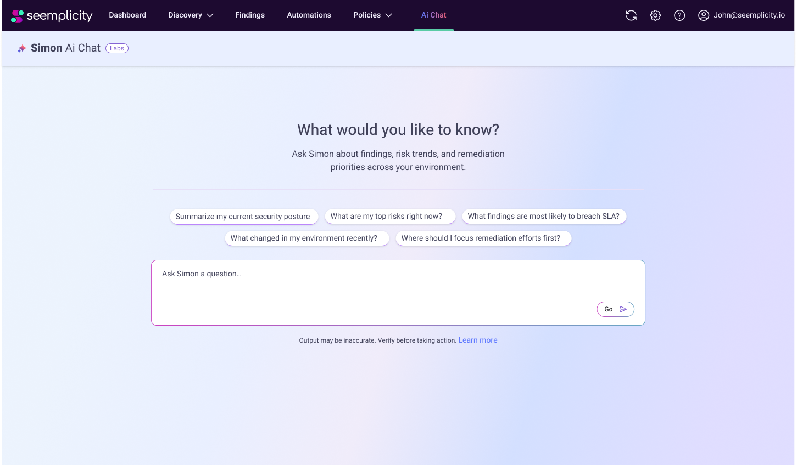
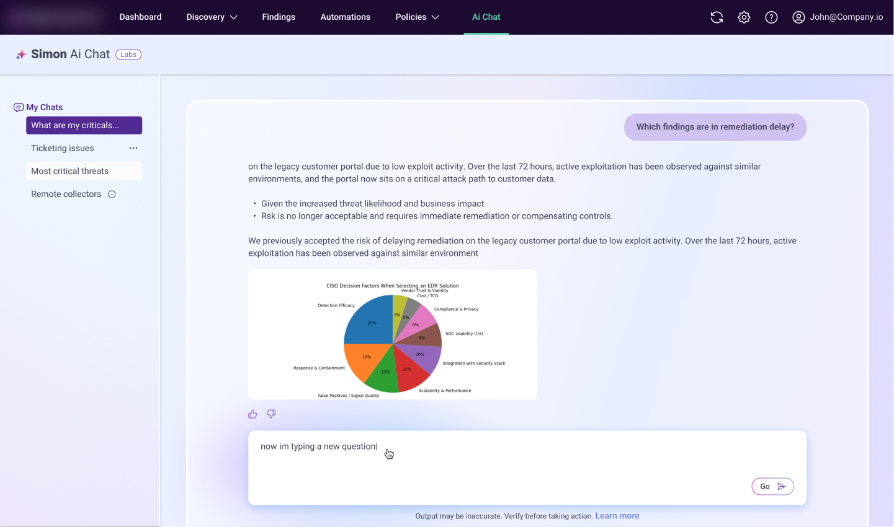
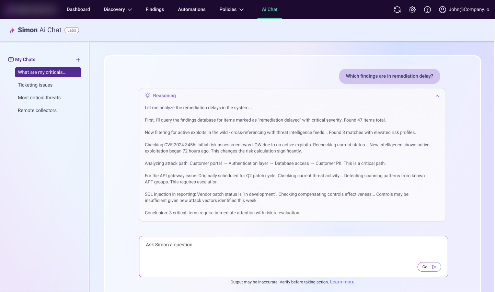
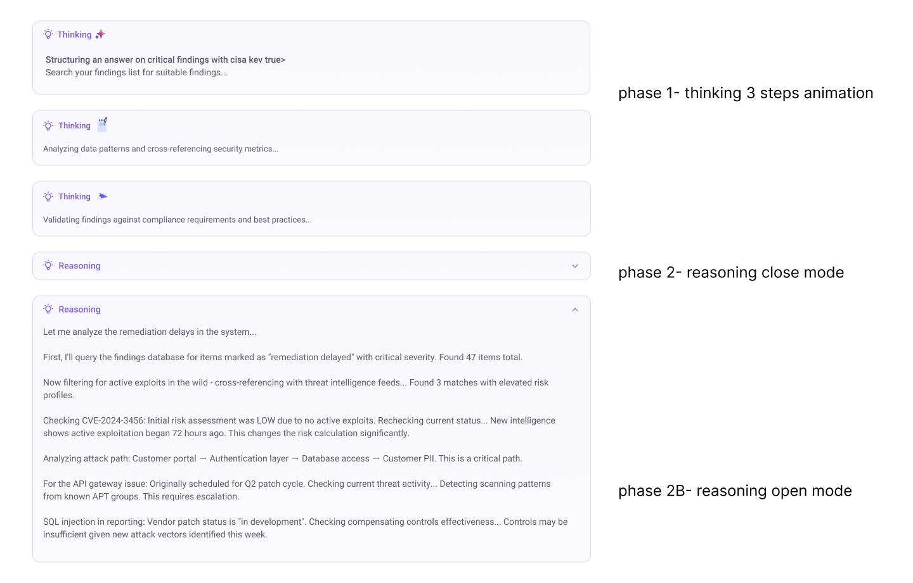
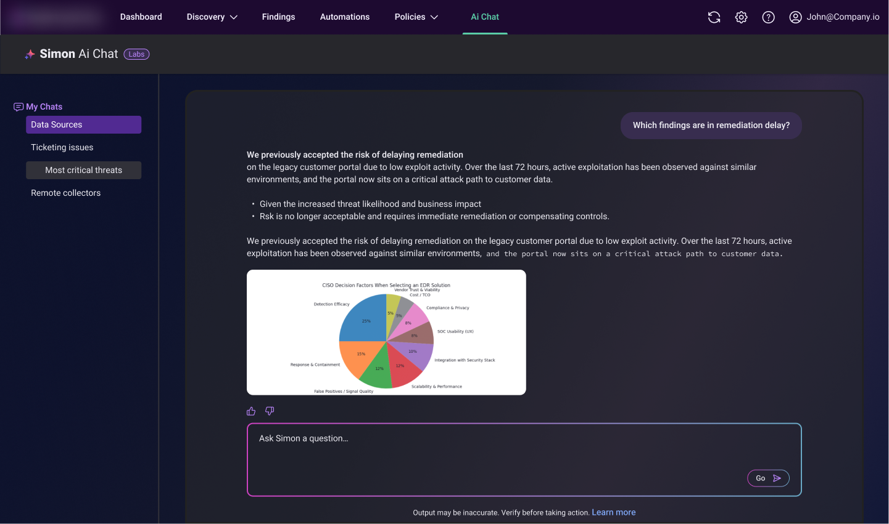
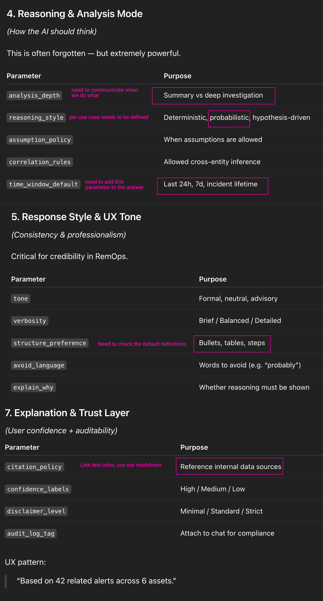

Product AI Chat
Integrated AI chat ✦
What are we trying to fix?
Currently, users find answers within the constraints of the product's existing structure, where data is compartmentalized. They often need to navigate multiple pages just to answer a single question.
The chat removes these limitations. It has cross-system visibility and can synthesize data holistically, delivering high-quality answers in seconds.
Another major benefit is reducing the learning curve during onboarding. Users no longer need to master the system's navigation if they choose not to. They can simply interact with the chat, ask questions, apply filters, and execute actions conversationally.



Want to see a live Figma prototype?
Explore the interactive prototype →Reasoning Process

Dark Mode

In Chat UX Definitions
